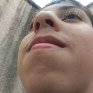

Olá, meu nome é Pedro Covaleski, tenho 17 anos. Sou um desempregado que faz nada em casa por enquanto ou não. Meu time de coração é o Flamengo desde 2015. Tive azar de começar a torcer nesse ano, mas continuei amando.
Sei desenhar, andar de skate, mas só andar, manobra não sei. E tenho gogó grande, não sei se isso ajuda nas informações, mas é só pra deixar grande, também tenho o joelho ferrado.
Sou goleiro e me aposentei no futebol. Sim, aposentei. Mas a qualquer momento posso voltar a jogar, por algum motivo sou BI, ninguem vai le isso então é bom deixar.
